What You Should Know - Vernier Science: Measure Motion
 Important Vocabulary
Important Vocabulary
- Quotient - the answer to a division problem
- Divisor - the number used to divide another number into parts
- Multi-digit - when a number has more than one digit
- Equation - a mathematical statement that includes an equal sign (5 x 6 = 30)
- Area Model - a model in which the quotient and divisor represent the area of a rectangle
- Rectangular Array - a set of objects arranged into columns and rows that form a rectangle
What Is Sound?
People with hearing may hear sound every day without thinking much about it. But, what is sound?
Every time you speak, clap your hands or hear the wind outside, you are listening to a bunch of vibrations moving through the air. These vibrations are what we call sound. They cause your eardrum to vibrate deep in your ear, which sends a signal to your brain. This is how humans hear.
 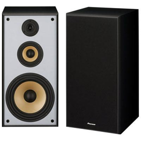
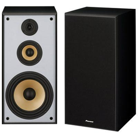
Playing music through speakers is a good way to experience very specific sound waves. If you look at the front of a speaker, you will see some round, drum-like cones. To create sound, each of these cones vibrates back and forth. This pushes the air back and forth around the speaker, creating airwaves. When the waves reach our ears, we hear music.
Measuring Distance with Sound
Since we cannot see sound waves, it can be a little hard to understand how they behave. It is easier if we think about other types of waves that we can see.
If you drop a pebble in a pool of water, it creates ripples—a series of small waves. When the waves reach the edge of the pool, they bounce off and travel back in the opposite direction. If we know how fast the waves travel and measure how long it takes for the waves to return to their starting spot, we could figure out the distance to the edge of the pool.
Vernier Go! Motion Sensor
The Vernier Go! Motion sensor uses this same idea: It creates sound waves that travel at a known speed to an object in front of it. The waves then bounce off the object and move back to the sensor. By measuring how long it takes the wave to return, it can figure out how far away the object is located. We call this echolocation.
The Vernier Go! Motion sensor uses ultrasonic sound waves. This means that they are too high-pitched for humans to hear. Why do you think it uses ultrasonic sound waves?
Animal Adaptation
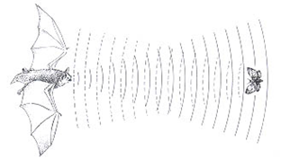
Some animals have also mastered the use of echolocation. For example, most smaller species of bats emit ultrasonic sound waves while flying at night. This is how they find insects to eat.
Sound waves can travel through more than just air. In fact, they travel so well in water that many sea mammals, like dolphins, also use echolocation to hunt prey.
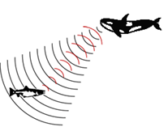
Representing the Quotient of Multi-Digit Numbers Using Equations
 The quotient of a multi-digit number is the answer provided for a division problem of whole numbers with more than one digit. When dividing a multi-digit number using an equation, this can be represented in two different ways. First, it could be presented as a multiplication problem, e.g. 12x = 264. Otherwise, it can be represented as an actual division problem of 264 ÷ 12 = x.
The quotient of a multi-digit number is the answer provided for a division problem of whole numbers with more than one digit. When dividing a multi-digit number using an equation, this can be represented in two different ways. First, it could be presented as a multiplication problem, e.g. 12x = 264. Otherwise, it can be represented as an actual division problem of 264 ÷ 12 = x.
Solve and you are left with an equation: 264 ÷ 12 = 22
Representing the Quotient of Multi-Digit Numbers Using an Area Model
For this example, you will divide 264 by 12.
- Brainstorm ways to multiply by the divisor. The divisor is the number used to divide another number into parts. In 264 ÷ 12, 12 is the divisor.
- Draw a rectangle (it will not be drawn to scale).
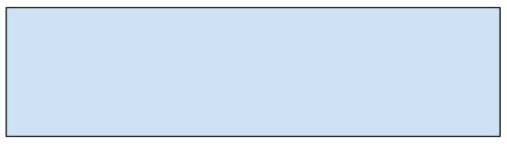 - Place the divisor on the left side of the rectangle.
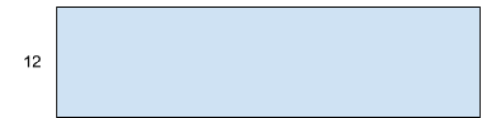 - Place the other number in expanded form inside the rectangle.
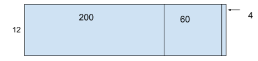 - Begin dividing the first box by 12. 200 divided by 12 is 16 with a remainder of 8. The remainder gets added to the next box.
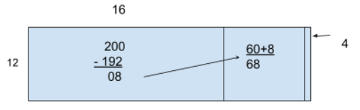 - Add the remainder to the next box then divide 68 by 12. 68 divided by 12 is 5 with a remainder of 8. The remainder gets to the next box.
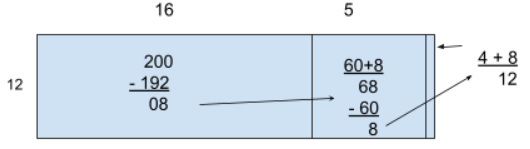 - Add the remainder to the next box then divide 12 by 12. 12 divided by 12 is 1 with a remainder of 0.
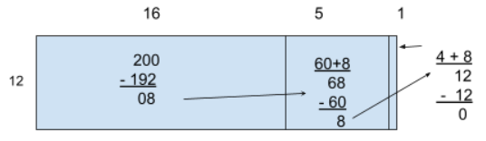 - Add the numbers above the rectangle to get an answer of 16 + 5 + 1= 22.
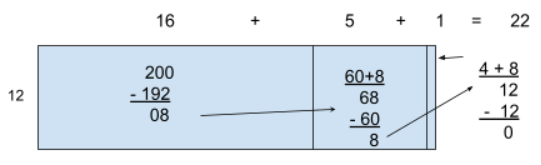 - Therefore, 264 ÷ 12 = 22.
Representing the Quotient of Multi-Digit Numbers Using a Rectangular Array
If you are dividing 264 by 12, you must first start by drawing 264 objects. For this example, circles have been chosen as the object. Then, you need to divide the objects into the number of groups represented by the divisor which is 12 in this scenario.
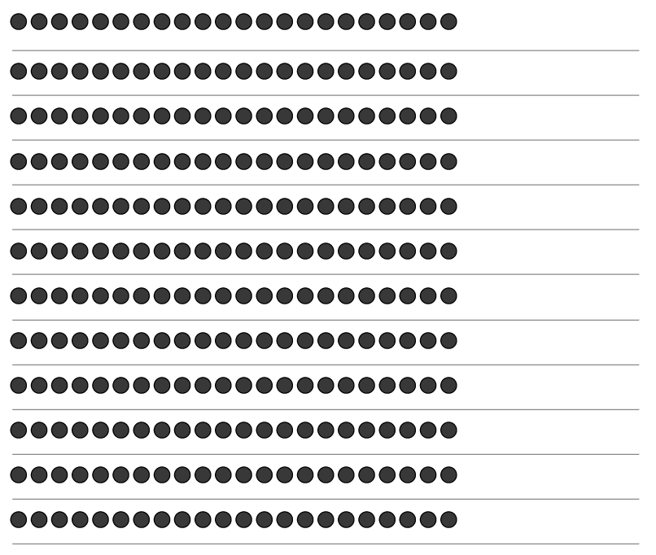
There are 12 groups of 22. Therefore, 264 ÷ 12 = 22.
Career Connection and Real-World Application
Sound Waves in Careers
Many careers require knowledge of sound waves. Meteorologists forecast the weather through the use of a Doppler radar, which monitors waves for high levels of precipitation; this information could warn us about storms, tornadoes, and hurricanes. Electronic engineers take the height and frequency of waves into consideration when designing and developing electronics, such as radios, cellular phones, and WiFi devices. Electronic engineers also measure the distance a wave will travel when determining the best location for a device.